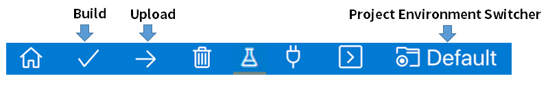

PlatformIO IDE for VSCodeの設定
はじめに
VSCode(Visual Studio Code)は、Microsoft社が提供するエディターです。PlatformIO IDEは、VSCodeの拡張機能で、ライブラリやボードのバージョンがプロジェクト毎に管理されます。 PlatformIOの公式ドキュメント
ttps://docs.platformio.org/en/latest/integration/ide/vscode.html#ide-vscode
用意するもの
- Basic Kit 2
- パソコン (Windows、macOS、または Linux)
事前準備
Downloads
- STM32CubeProg2 Windows 64bitのV2.12.0、V2.6.0、V2.4.0は、動作確認済み。v2.5.0は動作しないので要注意
-
VSCode4
拡張機能(画面左のバー)をクリックし、以下をインストールJapanese Language Pack for Visual Studio Codeplatformio ideSerial Monitorteleplot
STM32MCUのBoardファイルの作成 5
以下の手順で、NUCLEO-L452REをベースにBoardファイルを作成して下さい。
-
VSCodeを立ち上げ、
ファイル→新しいウィンドウを開きます。 -
PlatformIO(画面左のバー)をクリックし、PIO Home/Openをクリックします。 -
New Projectをクリックすると、Project Wizardが表示され、以下を入力してFinishをクリックします。6
- Name:
Test - Board:
ST Nucleo L452RE - Framework:
Arduino
-
C:\Users\ユーザ名\ .platformio の下に、①と②のふたつのフォルダが出来ていることを確認して下さい。
-
次に、③と④をGitHubからダウンロードしてパソコンに保存します。③は追加で、④は上書きです。
https://github.com/Leafony/platformio-LEAFONY_AP03
- Project Wizardの
Boardの検索窓にLEAFONY_AP03が表示されることを確認して下さい。
プログラムの保存場所の変更
Windows 11のデフォルトのプログラムの保存場所7では、パスに日本語あるため書き込が出来ません。以下のように変更します。
C:\Users\ユーザ名\PlatformIO\Projects\STM32_Hello_World_Pjt\.pio\build\LEAFONY_AP03\firmware.bin
プログラムの保存場所を変更方法します。
-
VSCodeを立ち上げ、
ファイル→新しいウィンドウを開きます。 -
PlatformIO(画面左のバー)をクリックし、PIO Home/Openをクリックします。 -
ターミナルを立ち上げて、以下のコードを実行します。
pio settings set projects_dir ＜設定したい(絶対)パス＞
- VSCodeを再起動します。
クイックスタート
「Hello Wold」の事例で、platformIO IDEの使い方を紹介します。
-
VSCodeを立ち上げ、
ファイル→新しいウィンドウを開きます。 -
PlatformIO(画面左のバー)をクリックし、PIO Home/Openをクリックします。 -
New Projectをクリックし、を以下の通り入力して、Finishをクリックします。
- Name:
STM32_Hello_World_Pjt - Board:
LEAFONY_AP03 - Framework:
Arduino
platformio.ini(画面左)を開き、 COMポートの番号とシリアル通信のボーレートを記述します。
[env:leafony_ap03]
platform = ststm32
board = leafony_ap03
framework = arduino
;upload_protocol for Windows
upload_port = COM<番号>
upload_command = %%userprofile%%\AppData\Local\Arduino15\packages\STM32\tools\STM32Tools\1.4.0\tools\win\stm32CubeProg.bat 1 $SOURCE $UPLOAD_PORT -s
;upload_protocol for macOS
;upload_port = cu.usbserial-<シリアル番号>
;upload_command = /Users/<ユーザ名>/Library/Arduino15/packages/STM32/tools/STM32Tools/1.4.0/tools/macosx/stm32CubeProg.sh 1 $SOURCE $UPLOAD_PORT -s
monitor_speed = 115200
src/main.cpp(画面左）を開き、以下のコードを貼り付けて下さい。 PlatformIO IDEのコードは、Arduino IDEのスケッチの先頭に#include <Arduino.h>を加えます。
#include <Arduino.h>
void setup() {
Serial.begin(115200);
delay(10);
}
void loop(){
Serial.println("Hello World");
delay(1000);
}
- ソースコード:STM32_Hello_Wold_Pjt
- PlatformIO ツールバー(画面下のバー)の
Project Environment Switcherボタンを押すと、アクティブなプロジェクが画面上側に全て表示されます。 実行するプロジェクトを正しく選択して、Buildボタンを押して下さい。

-
こちら を参照し、プログラムモード(LED点灯)にし下さい。
-
Uploadボタンを押すと、プログラムがMCUに書き込まれます。SUCCESSと表示されても以下のように記述されない時は、正しく書き込まれていないのでUSBを再接続して下さい。 -
次に、実行モード(LED消灯)にてリセットボタンを押し、
シリアルモニターにHello Wolrd`の表示が出来れば完成です。
CPUの周波数を80MHz(デフォルト)から16MHzに設定変更
CPUの周波数は、80MHz（デフォルト）に設定されています。省電力を実現するためにCPUの周波数を下げることは有効な手段なので、CPUの周波数を16MHzに設定出来るようにしました。設定方法を以下に記します。
platformio.iniに以下を追記して下さい。
; Enable function to set CPU frequency to 16 MHz in Leafony_tools.cpp
build_flags = -D CPUCLOCK_LOW
leafony_tools.cppのファイルを以下からダウンロードし、srcに保存して下さい。
https://github.com/Leafony/platformio-LEAFONY_AP03
- 以下のソースコードを実行して、CPUの周波数が16MHzに設定されていることをシリアルモニターで確認して下さい。
- ソースコード：STM32_CPU_Frequency_Pjt
ライブラリ
ライブラリは、platformio.ini の最後の行に、lib_deps =で定義します。
| Item | lib_deps | Tags | Description |
|---|---|---|---|
| BLE | https://github.com/Leafony/TBGLib | Bluetoothライブラリ | |
| 4-Sensors | adafruit/Adafruit Unified Sensor@^1.1.6 | ユニファイドセンサドライバ | |
| adafruit/Adafruit BusIO@^1.14.1 | Bus IOライブラリ | ||
| https://github.com/ameltech/sme-hts221-library | 温湿度センサライブラリ | ||
| closedcube/ClosedCube OPT3001@^1.1.2 | 照度センサライブラリ | ||
| adafruit/Adafruit LIS3DH@1.1.2 | 1.1.2 | 加速度センサライブラリ | |
| LCD | tomozh/ST7032@0.0.0-alpha+sha.501bf64fe6 | LCDライブラリ | |
| AVR MCU | paulstoffregen/MsTimer2@^1.1 | タイマ割り込みライブラリ | |
| RTC&MicroSD | adafruit/RTClib@^2.1.1 | RTCライブラリ | |
| STM32 MCU | stm32duino/STM32duino RTC @1.2.0 | 1.2.0 | STM32RTCライブラリ |
| stm32duino/STM32duino Low Power@1.2.2 | 1.2.2 | STM32LowPowerライブラリ | |
| LTE-M | https://github.com/Leafony/LteLeafV4 | LTE-Mライブラリ | |
| Wi-Fi | https://github.com/Leafony/WiFi101Leafony | Wi-Fi Maryライブラリ | |
| LoRa | https://github.com/Leafony/arduino-LoRa | LoRaライブラリ | |
| https://github.com/Leafony/arduino-tca9536 | TCA9536ライブラリ | ||
| sparkfun/SparkFun ATECCX08a Arduino Library@1.3.1 | ATECCX08aライブラリ |
シリアルプロッター
PlatformIOには、Arduino IDEにあるシリアルプロッターがないため、VSCodeの拡張機能であるTeleplot for VSCodeを導入します。サンプルのソースコードをダウンロードして、試して下さい。
-
GitHubからソースコードをダウンロードし、パソコンの所定の場所に保存1 します。
- ソースコード:STM32_Teleplot_Example_1
-
プログラムを実行して下さい。
-
画面下の
teleplotの表示をクリックして、COMポートを指定して、Openを押すとグラフが表示されます -
>varName:1234\nという形式のシリアルメッセージは、すべてteleplotに表示されます。詳しくは、こちらを参照して下さい。
// Plot a sinus
Serial.print(">sin:");
Serial.println(sin(i));
// Plot a cosinus
Serial.print(">cos:");
Serial.println(cos(i));
Tips
MCUとBoardとの関係
LeafonyのMCUとPlatformIO IDEのBoardとの関係は、以下の様になります。
| Type | Item | Platform | Board | Upload | |
|---|---|---|---|---|---|
| AP01 | AVR MCU | atmelavr | Arduino Pro or Pro Mini ATmega328(3.3v,8Mhz) | COMポートの自動検出 | |
| AP02 | ESP32 MCU | Espressif 32 | Espressif ESP32 Dev Module | COMポートの自動検出 | |
| AP03 | STM32 MCU | ststm32 | LEAFONY_AP03 | COMポートの自動検出が出来ない。 |
プログラムを記述する時のArduino IDEとの違い
-
#include <Arduino.h>をプログラムの先頭に記述 Arduino IDEは、プログラム言語としてはC++を使っており、基本的な型の宣言やよく使うライブラリのヘッダファイルは
Arduino.hを書かなくても自動的にインクルードされますが、PlatformIO IDEは、Arduino.hがプログラムの先頭に必要に記述する必要があります。 -
独自関数は使用する関数の前に定義 Arduino IDEは、独自関数の定義を使用する関数の後に書いてもビルドが
SUCCESSになりますが、PlatformIO IDEは、C++のルールに従って独自関数は使用する関数の前に定義する必要があります。
例えば、以下は、独自関数の設定は、使用する関数の後に書いてあるのでビルドがFAILになります。
void setup() {
// put your setup code here, to run once:
func();
}
void func() {
;
}
以下は、独自関数の定義は、使用する関数の前に書いてあるのでビルドがSUCSESSになります。
void func() {
;
}
void setup() {
// put your setup code here, to run once:
func();
}
以下は、プロトタイプ宣言するので、ビルドがSUCSESSになります。
// Prototypes
void func(void);
void setup() {
// put your setup code here, to run once:
func();
}
void func() {
;
}
STM32CubeProgによるプログラムの書き込み
C:\Users\ユーザ名\PlatformIO\Projects\STM32_Hello_World_Pjt\.pio\build\LEAFONY_AP03\firmware.bin
- 画面左のErasing ＆ Programingをクリックして、
File pathにイメージファイルを指定し、プログラムを書き込んで下さい。
-
PlatformIOで、upload_commandを実行するため ↩︎
-
STM32MCUにプログラムを書き込むため ↩︎
-
PlatformIO IDEを動かすため ↩︎
-
PlatformIO IDEは、VSCodeの拡張機能 ↩︎
-
STM32MCUのBoardのボードが、2023年10月にplatformIOに登録されましたが、ボードの定義にミスが見つかったため ↩︎
-
新しいBoardを選択した時、ダウンロードするまで数分かかります。 ↩︎
-
デフォルトのプログラムの保存場所は、
C:\Users\ユーザ\OneDrive\ドキュメント\PlatformIO\Projectsです。 ↩︎ -
イメージファイルが日本語のフォルダの下にある場合は、書き込みすることが出来ないので別の場所に移動します。 ↩︎